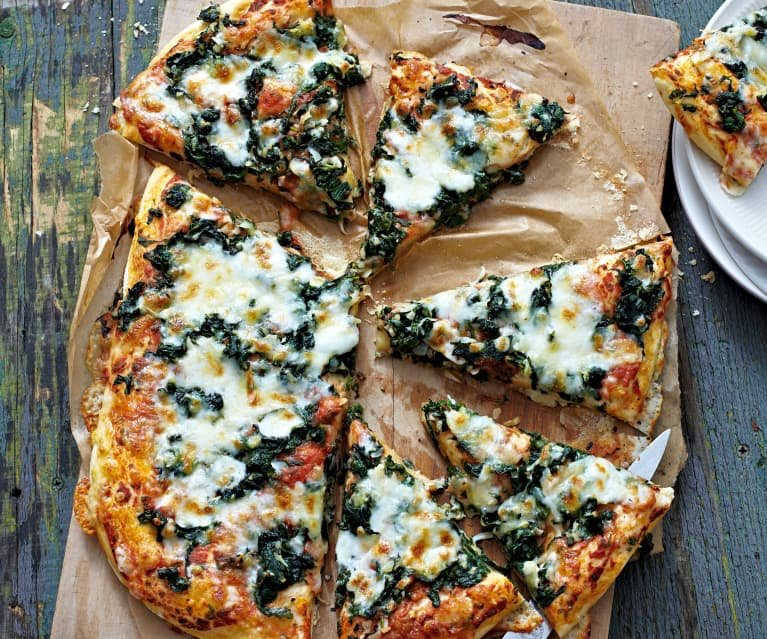

Pizza épinards-feta
Ingrédients
- 350 g de farine
- 200 g d'eau
- 20 g de levure boulangère fraîche
- 1.5 c. à c. de sel
- 25 g d'huile d'olive
- 1 pincée de sucre
- 250 g de mozzarella
- 200 g de feta
- 400 g de tomates pelées
- 0.25 c. à c. de poivre
- 2 branches de basilic
- 1 c. à c. d'origan
- 1 oignon
- 1 gousse d'ail
- 10 g d'huile végétale
- 150 g d'épinards frais
- 3 -4 tranches de jambon cru

Préparation
Étape 1
Pétrir 350 g de farine, 200 g d'eau, 20 g de levure boulangère fraîche, 1 c. à c. de sel, 25 g d'huile d'olive et 1 pincée de sucre Pétrin/2 min.
Étaler la pâte sur une plaque (40 x 35 cm) couverte de papier cuisson et laisser pousser 30min.
Étape 2
Préchauffer le four à 230ºC. Râper 250 g de mozzarella et 200 g de feta 5 sec/vitesse 4. Réserver.
Étape 3
Mixer 400 g de tomates pelées, 0.5 c. à c. de sel, 0.25 c. à c. de poivre, 2 branches de basilic et 1 c. à c. d'origan 20 sec/vitesse 5. Étaler sur la pâte.
Étape 4
Hacher 1 oignon et 1 gousse d'ail 4 sec/vitesse 5. Ajouter 10 g d'huile végétale et 150 g d'épinards frais, rissoler 7 min/100ºC/vitesse 1, sans le gobelet.
Étape 5
Répartir les épinards sur la sauce et parsemer de fromages. Cuire 20min à 230ºC. Garnir éventuellement de 3 -4 tranches de jambon cru en lanières.
Conseils
- Avec des épinards surgelés, réduire la cuisson de 2 min.
- Couper les grandes feuilles d’épinard pour qu’elles ne s’enroulent pas autour des couteaux.